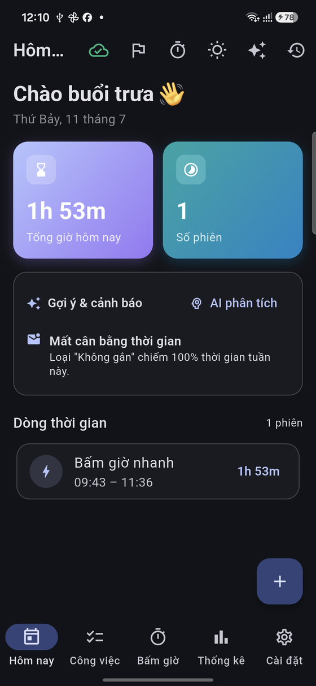
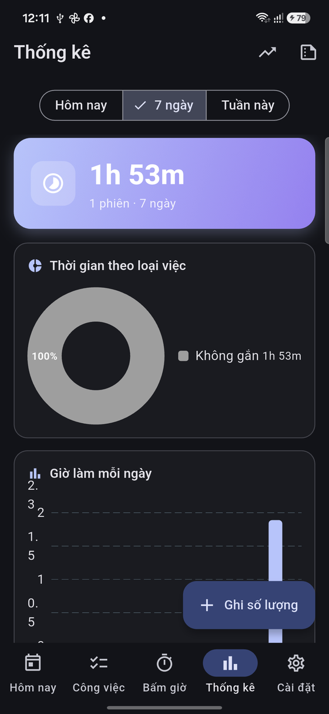

“Hệ điều hành công việc” cá nhân cho dân IT/văn phòng: ghi lại đã nhận việc gì, đã làm gì, tốn bao lâu — rồi để AI biến dấu vết đó thành báo cáo, thống kê và gợi ý. Chạy offline, dữ liệu nằm trên máy bạn.
Phiên bản 1.1.81 · Android & Windows · Miễn phí
Không chỉ là app to-do — mà là “bộ nhớ thứ hai” cho công việc của bạn.
Một ngày của người làm IT/văn thư/hỗ trợ chuyển ngữ cảnh liên tục: fix API, hỗ trợ phòng ban, họp, viết SQL, trả email, làm công văn, kiểm tra tài chính… Đến cuối ngày gần như không nhớ nổi mình đã làm gì để báo cáo. Vấn đề không phải “quá nhiều việc”, mà là quá nhiều loại việc và ngữ cảnh.
WorkPilot AI được xây như một hệ điều hành công việc cá nhân: nó không chỉ lưu task, mà lưu toàn bộ dấu vết làm việc — yêu cầu của ai/phòng nào, thời gian tiêu tốn, số lượng, trạng thái, cảm xúc, hạn chót, tệp đính kèm và các phân tích của AI. Sau vài tháng, bạn có một kho dữ liệu để AI trả lời: “Tháng qua mình dành bao nhiêu thời gian cho HRM?”, “Ai giao việc nhiều nhất?”, “Việc nào hay bị chậm?”, “Viết báo cáo tuần giúp mình.”
Cho ai? Lập trình viên, cán bộ CNTT, văn thư, hỗ trợ người dùng — bất kỳ ai phải theo dõi nhiều loại việc và làm báo cáo ngày/tuần. Riêng tư theo thiết kế: dữ liệu lưu trên máy; đồng bộ (tùy chọn) dùng tài khoản Supabase của riêng bạn; tính năng AI dùng API key của bạn (hoặc proxy bạn tự dựng) — chúng tôi không giữ dữ liệu của bạn.
Giao diện tối, gọn, tập trung vào thao tác nhanh (ảnh thật từ Android).

Hôm nay — tổng giờ, gợi ý & cảnh báo AI, dòng thời gian
Thống kê — thời gian theo loại việc & theo ngàyMọi thứ bạn cần để theo dõi công việc và năng suất.
Đo thời gian theo từng việc/loại việc, cảm xúc & năng lượng mỗi phiên.
Ghi nhanh việc lặp lại và số lượng (hồ sơ, cuộc gọi…) để thống kê & báo cáo.
Báo cáo ngày/tuần, gợi ý & cảnh báo chủ động, phân loại từ ảnh/tin nhắn (dùng API key của bạn).
Biểu đồ thời gian, số lượng, cảm xúc theo loại việc và theo ngày.
Ghi chú theo dõi/đề xuất gắn vào việc hay phiên, gom lại để xử lý sau.
Đa thiết bị tức thì, offline-first: mất mạng vẫn ghi, tự đồng bộ khi mạng ổn.
Xem nhanh tổng giờ hôm nay ngay ngoài màn hình (Android).
Tự tạo việc lặp (ngày/tuần/tháng); nhắc trước hạn & báo cáo chạy nền (báo đúng giờ kể cả khi đóng app, sống sót reboot).
Gắn ảnh báo lỗi hoặc tài liệu vào công việc, xem trước ngay trong app.
Hồ sơ theo người yêu cầu/phòng ban: khối lượng việc, thời gian, tốc độ phản hồi (SLA).
AI so sánh xu hướng tuần; tìm kiếm toàn cục và “Kế hoạch hôm nay” do AI sắp xếp.
Xuất/khôi phục toàn bộ dữ liệu bằng mật khẩu của riêng bạn.
Chụp/chọn ảnh whiteboard, tin nhắn, lỗi… AI đọc và bóc tách thành danh sách việc.
Gõ tự nhiên “cấp quyền HRM cho cô Lan, hạn thứ 6, ưu tiên cao” — AI tự điền người, phòng ban, hạn chót & ưu tiên.
Chia sẻ text/ảnh từ Zalo, Gmail, Chrome… thẳng vào WorkPilot để tạo việc & đính kèm (Android).
Nạp hạn chót vào Google/Outlook Calendar; cảnh báo khi khối lượng ngày quá cao.
Sự kiện có giờ bắt đầu & địa điểm; nhắc đa mốc trước 1 ngày / 1 giờ / lúc bắt đầu, kể cả khi không mở app.
Đếm ngược tập trung/nghỉ, tự ghi giờ cho việc; chia nhỏ việc lớn bằng checklist.
Vuốt để hoàn thành/xoá, ghi nhanh “thông minh” (#nhãn @người !ưu-tiên), chọn nhiều & xử lý hàng loạt, hoãn hạn 1 chạm.
Chia nhỏ việc lớn thành checklist có tiến độ; ghi số lượng theo đơn vị để thống kê & báo cáo.
Xuất phiên, số lượng, công việc ra CSV (Excel); nhập dữ liệu cũ lùi ngày (phiên bấm giờ, số lượng, công việc) để thống kê chính xác; sao lưu mã hóa.
Bảo vệ dữ liệu công việc bằng mã PIN khi mở app hoặc quay lại từ nền.
Kéo-thả thẻ việc giữa các cột trạng thái (Cần làm · Đang làm · Xong · Để sau) để cập nhật nhanh.
Đặt 3–5 mục tiêu cho mỗi tuần kèm thanh tiến độ; điều hướng qua lại giữa các tuần.
Tổng kết giờ & việc đã xong, chọn cảm xúc trong ngày, xem việc dời sang mai & top ưu tiên.
Nối các việc liên quan/phụ thuộc; cảnh báo khi một việc đang chờ việc khác hoàn thành trước.
AI tổng hợp việc đang mở theo người & phòng ban kèm bước tiếp — sẵn sàng khi nghỉ phép/bàn giao.
Dữ liệu lưu ngay trên máy. Đồng bộ dùng tài khoản Supabase của riêng bạn; AI dùng API key của bạn.
Chọn nền tảng của bạn. Miễn phí.
Mở file APK & cho phép cài từ nguồn không rõ nếu được hỏi.
Cài bằng Setup.exe để về sau app tự cập nhật (chỉ tải bản vá nhỏ).
Hoặc tải bản .zip portable — giải nén rồi chạy workpilot_ai.exe (không tự cập nhật).
Tất cả bản tải nằm ở mục Releases của dự án.
Ngắn gọn, rõ ràng.
Chưa tìm thấy câu trả lời? Gửi yêu cầu hỗ trợ bên dưới.
Không bắt buộc. Mọi tính năng cốt lõi (bấm giờ, ghi việc, thống kê) chạy offline. Internet chỉ cần cho AI và đồng bộ.
Vào Cài đặt → AI, dán API key (Google Gemini miễn phí tại aistudio.google.com/apikey, hoặc Groq/OpenRouter/OpenAI). Có thể thêm nhiều key để tự xoay vòng.
Tạo project Supabase miễn phí, chạy file cấu hình SQL đi kèm, rồi nhập URL + anon key vào Cài đặt → Đồng bộ và đăng nhập. Có thể chép cấu hình sang máy khác bằng file/QR.
Dữ liệu lưu trên máy bạn; nếu đồng bộ thì nằm trong tài khoản Supabase của riêng bạn với bảo mật theo hàng (RLS). Xem mục Chính sách ở trên.
App miễn phí. Tính năng AI gọi bằng API key của bạn: Google Gemini có hạn mức miễn phí rộng rãi; các nhà cung cấp khác (Groq/OpenRouter/OpenAI) tính theo chính sách của họ. Bạn hoàn toàn kiểm soát chi phí AI.
Vào Cài đặt → Sao lưu & khôi phục: xuất toàn bộ dữ liệu ra một tệp mã hóa bằng mật khẩu của bạn, rồi khôi phục trên máy mới. Ngoài ra có thể xuất CSV để mở bằng Excel.
Chọn ảnh (whiteboard, tin nhắn, ảnh lỗi…), AI đọc và bóc tách thành danh sách việc để bạn tick chọn & tạo hàng loạt. Cần bật AI. Đính kèm ảnh/file vào việc là cục bộ theo máy (không đồng bộ).
Vì bảo mật, PIN chỉ lưu dạng băm trên máy và không thể khôi phục. Nếu quên, cần gỡ & cài lại app — vì vậy hãy bật Sao lưu trước khi đặt PIN.
Tải bản mới ở mục Releases và cài đè lên bản cũ (từ 1.1.1 trở đi cập nhật đè bình thường, dữ liệu giữ nguyên).
Hiện có Android và Windows. App viết bằng Flutter nên có thể mở rộng sang nền tảng khác trong tương lai.
Android chặn cài từ nguồn ngoài Play Store theo mặc định. Khi được hỏi, chọn “Vẫn cài đặt / Cho phép nguồn này”.